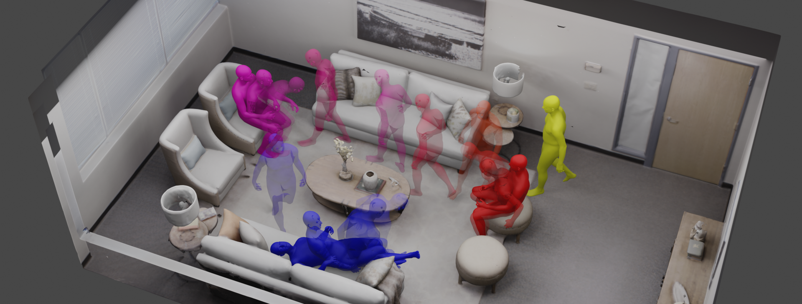

I am a final-year PhD student in the Computer Vision and Learning Group (VLG) at ETH Zürich, supervised by Prof. Siyu Tang. I previously interned at the NVIDIA Spatial Intelligence Lab and have had the pleasure to collaborate with Thabo Beeler at Google. Before my PhD, I obtained my Master's degree in Computer Science with distinction from ETH Zürich in 2022, and my Bachelor's degree in Computer Science from Beihang University in 2019.
My research goal is to build humanoid agents that can perceive, reason, and behave like humans, enabling applications ranging from virtual characters in digital worlds to humanoid robots in the physical world. Specifically, my PhD research has focused on interactive and controllable human behavior synthesis.
I'm on the job market for full-time positions. Feel free to reach out if you have any openings that I might be a fit for.
Email / Google Scholar / Twitter / LinkedIn / Github

Kaifeng Zhao,
ACM Transactions on Graphics (SIGGRAPH 2026)
@article{Zhao_2026,
title={Autoregressive Diffusion with Hybrid Representation for Interactive Human Motion Generation},
volume={45},
ISSN={1557-7368},
url={http://dx.doi.org/10.1145/3811284},
DOI={10.1145/3811284},
number={4},
journal={ACM Transactions on Graphics},
publisher={Association for Computing Machinery (ACM)},
author={Zhao, Kaifeng and Petrovich, Mathis and Zhang, Haotian and Wang, Tingwu and Tang, Siyu and Rempe, Davis},
year={2026},
month={jul},
pages={1--14}
}We present ARDY, an autoregressive diffusion model designed for interactive human(oid) motion generation. ARDY natively supports online text prompting alongside a comprehensive suite of flexible kinematic constraints — including root waypoints and trajectories, full-body keyframes, and sparse joint positions and rotations — over long horizons.

arXiv 2026
@article{wu2026adapt,
title={ADAPT: Agile Diffusion Action Priors for Robust and Steerable Online Text-Driven Humanoid Control},
author={Wu, Yan and Li, Chenhao and Zhao, Kaifeng and Li, Gen and Hutter, Marco and Tang, Siyu},
journal={arXiv preprint arXiv:2609.00677},
year={2026}
}ADAPT is an end-to-end diffusion-based skill prior for interactive text-driven humanoid control, mapping changing language commands directly to dynamically feasible whole-body actions at 50 Hz. A lightweight residual RL policy improves long-horizon robustness and smooth prompt switching, and the same prior can be reused for downstream goal reaching with controllable motion styles.

ACM Transactions on Graphics (SIGGRAPH 2026)
@article{Wang_2026,
title={MotionBricks: Scalable Real-Time Motions with Modular Latent Generative Model and Smart Primitives},
volume={45},
ISSN={1557-7368},
url={http://dx.doi.org/10.1145/3811334},
DOI={10.1145/3811334},
number={4},
journal={ACM Transactions on Graphics},
publisher={Association for Computing Machinery (ACM)},
author={Wang, Tingwu and Dionne, Olivier and De Ruyter, Michael and Minor, David and Rempe, Davis and Zhao, Kaifeng and Petrovich, Mathis and Yuan, Ye and Li, Chenran and Luo, Zhengyi and Robison, Brian and Blackwell, Xavier and Antoniazzi, Bernardo and Peng, Xue Bin and Zhu, Yuke and Yuen, Simon},
year={2026},
month={jul},
pages={1--22}
}MotionBricks is a large-scale, real-time generative framework for motion synthesis, achieving 15000 FPS and 2 ms latency covering over 350,000 motion skills by a single neural backbone.
Kaifeng Zhao,
ICLR 2025, Spotlight
@inproceedings{Zhao:DartControl:2025,
title = {{DartControl}: A Diffusion-Based Autoregressive Motion Model for Real-Time Text-Driven Motion Control},
author = {Zhao, Kaifeng and Li, Gen and Tang, Siyu},
booktitle = {The Thirteenth International Conference on Learning Representations (ICLR)},
year = {2025}
}DartControl achieves high-quality and efficient ( > 300 frames per second ) motion generation conditioned on online streams of text prompts. Furthermore, by integrating latent space optimization and reinforcement learning-based controls, DartControl enables various motion generation applications with spatial constraints and goals, including motion in-between, waypoint goal reaching, and human-scene interaction generation.

Marko Mihajlovic, Siwei Zhang, Gen Li, Kaifeng Zhao, Lea Müller,
ICCV 2025, Highlight
@inproceedings{ICCV25:VolumetricSMPL,
title={{VolumetricSMPL}: A Neural Volumetric Body Model for Efficient Interactions, Contacts, and Collisions},
author={Mihajlovic, Marko and Zhang, Siwei and Li, Gen and Zhao, Kaifeng and M{\"u}ller, Lea and Tang, Siyu},
booktitle={Proceedings of the IEEE/CVF International Conference on Computer Vision (ICCV)},
year={2025}
}VolumetricSMPL is a lightweight extension that adds volumetric capabilities to SMPL(-X) models for efficient 3D interactions and collision detection.

ICCV 2025
@article{li2025egom2p,
title={EgoM2P: Egocentric Multimodal Multitask Pretraining},
author={Li, Gen and Chen, Yutong and Wu, Yiqian and Zhao, Kaifeng and Pollefeys, Marc and Tang, Siyu},
journal={arXiv preprint arXiv:2506.07886},
year={2025}
}EgoM2P: A large-scale egocentric multimodal and multitask model, pretrained on eight extensive egocentric datasets.

CVPR 2024, Oral Presentation
@inproceedings{li2024egogen,
title={{EgoGen}: An Egocentric Synthetic Data Generator},
author={Li, Gen and Zhao, Kaifeng and Zhang, Siwei and Lyu, Xiaozhong and Dusmanu, Mihai and Zhang, Yan and Pollefeys, Marc and Tang, Siyu},
booktitle={CVPR},
year={2024}
}EgoGen is new synthetic data generator that can produce accurate and rich ground-truth training data for egocentric perception tasks.

Kaifeng Zhao,
ICCV 2023
@inproceedings{Zhao:ICCV:2023,
title = {{DIMOS}: Synthesizing Diverse Human Motions in 3D Indoor Scenes},
author = {Zhao, Kaifeng and Zhang, Yan and Wang, Shaofei and Beeler, Thabo and Tang, Siyu},
booktitle = {International conference on computer vision (ICCV)},
year = {2023}
}In this work, we propose a method to generate a sequence of natural human-scene interaction events in real-world complex scenes as illustrated in this figure. The human first walks to sit on a stool (yellow to red), then walk to another chair to sit down (red to magenta), and finally walk to and lie on the sofa (magenta to blue).

Kaifeng Zhao,
ECCV 2022
@inproceedings{Zhao:ECCV:2022,
title = {{COINS}: Compositional Human-Scene Interaction Synthesis with Semantic Control},
author = {Zhao, Kaifeng and Wang, Shaofei and Zhang, Yan and Beeler, Thabo and Tang, Siyu},
booktitle = {European conference on computer vision (ECCV)},
year = {2022}
}We propose COINS, for COmpositional INteraction Synthesis with Semantic Control. Given a pair of action and object instance as the semantic specification, our method generates virtual humans naturally interacting with the scene objects.
- Reviewer for ICCV, CVPR, ECCV, 3DV, NeurIPS, SIGGRAPH Asia, ICLR, TPAMI.
- Head Teaching Assistant, 263-5806-00L Digital Humans, ETH Zürich Spring 2024
- Head Teaching Assistant, 263-5902-00L Computer Vision, ETH Zürich Fall 2023, Fall 2024
- Teaching Assistant, 263-5806-00L Digital Humans, ETH Zürich Spring 2023
- Teaching Assistant, 401-0131-00L Linear Algebra, ETH Zürich Fall 2022
|
Template adapted from Siwei Zhang's website. |